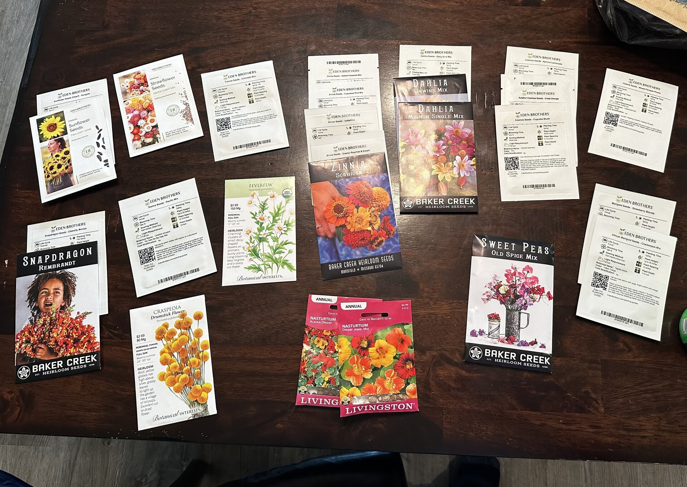
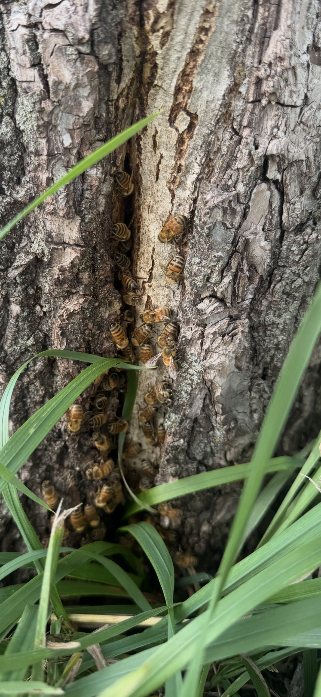
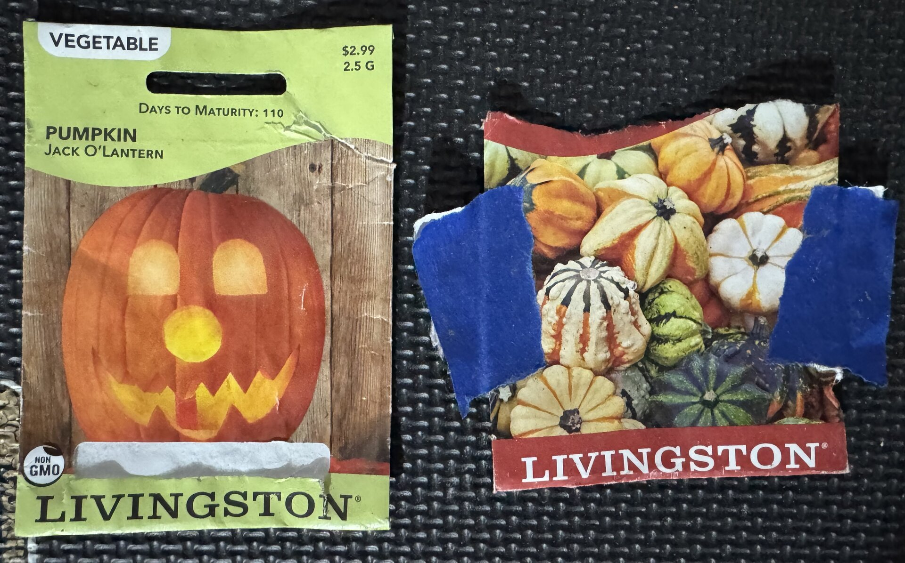

Feb 5 2026
Picked up Bachelor Button 'Blue Boy' seeds at Wal-Mart. These cheerful blue blooms are perfect for attracting pollinators and will add a lovely splash of color to the garden.

A simple journal of what is blooming, what we're planting and little moments from the garden
Picked up Bachelor Button 'Blue Boy' seeds at Wal-Mart. These cheerful blue blooms are perfect for attracting pollinators and will add a lovely splash of color to the garden.
Stocked up on seeds, quite the haul: sunflowers, snapdragons, dahlias, zinnias, sweet peas, nasturtiums, feverfew, and crepis drumstick flowers. A lovely mix from Eden Brothers, Baker Creek, Botanical Interests, and Livingston. Matt's still wants that bee hive.
Got our pumpkin and gourd seeds early this year! A wonderful variety from Livingston and Burpee: mini pumpkins, white pumpkins, Jack-O'-Lanterns, ornamental gourds including Turk's Turban and Daisy gourds, and even a few specialty varieties like Big Warty Thing and Peanut pumpkins. Planning ahead means we can start them at just the right time and hopefully have a bountiful harvest come fall.

Pumpkin and gourd harvest day! The striped and warty gourds tumbled out of the box in a riot of cream, orange, and deep green—each one a little work of art. The bright orange pumpkins scattered across the lawn caught the afternoon sun beautifully.


Discovered a bee colony in walnut tree! We here clean up the grass and heard buzing. The tree was only about 30 feet from the pumkins and guords.
Bought some pumpkin and gourd seeds. We'll see if we can start them and have something to harvest that late in the season.
